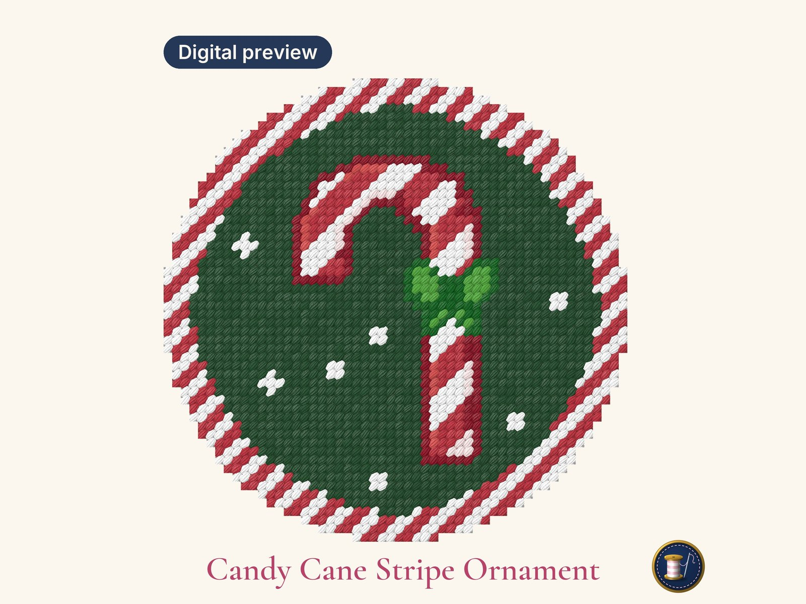

Free Candy Cane Ornament Needlepoint Pattern
A 3-inch round Christmas ornament chart, free to download. Paint it onto your own canvas or stitch straight from the chart.

54 x 54 stitches · 3.0" on 18 mesh, 4.2" on 13 mesh · 8 DMC colors · 9-page PDF
What's in the PDF
- A color chart and a black-and-white symbol chart, with a bold line every 10 stitches
- The DMC thread list
- True-size pages for 13 and 18 mesh: print one at 100% and trace it onto your canvas
- A start-here page on which pages to print, whether you paint or stitch
It's free for your own stitching. If a friend would like it, please send them this page rather than the file.
Like it?
The candy cane is one of the 10 designs in the Christmas Ornament Set: Santa lobster, nutcracker, gingerbread and more, in one PDF for 13 or 18 mesh.
Stitching for Hanukkah? All 8 Hanukkah ornaments come in one download too. Or browse the whole shop.